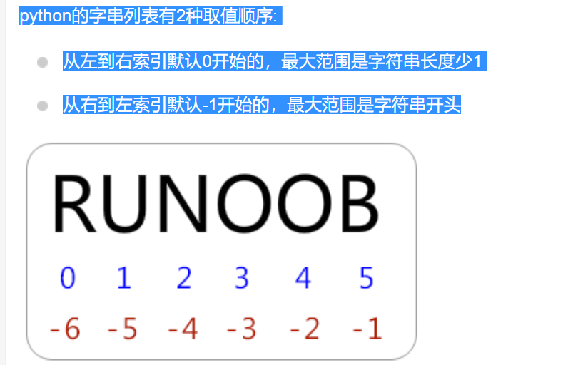
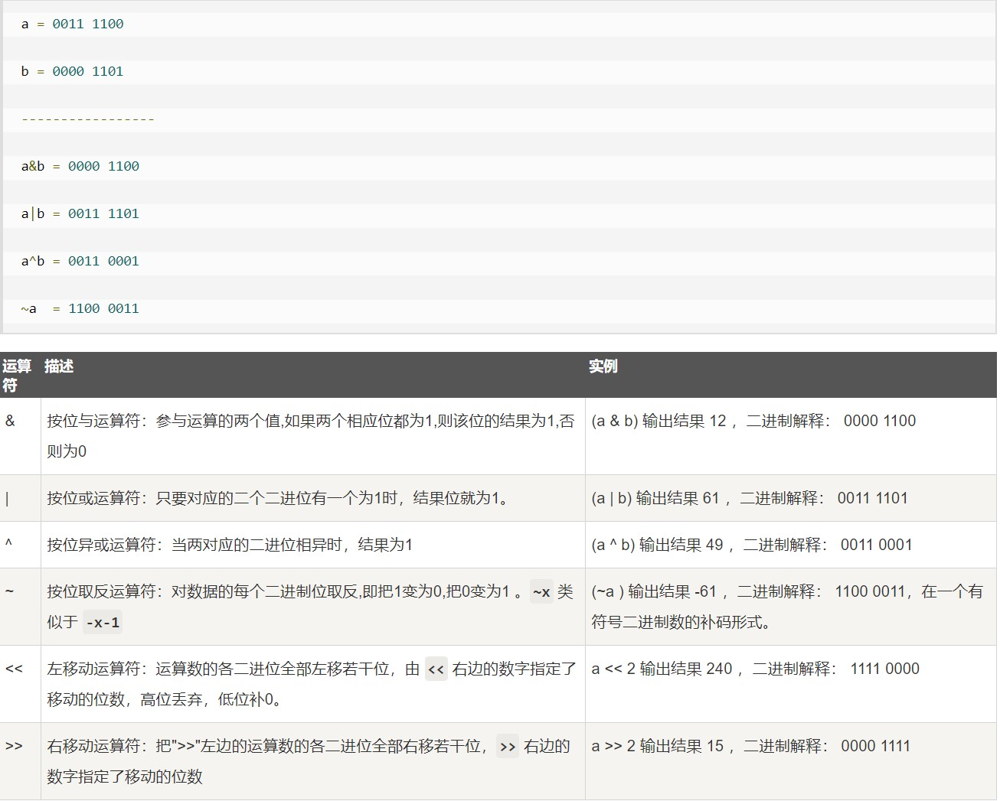

| 创建时间： | 2019/10/8 16:24 |
| 更新时间： | 2019/10/17 16:06 |
1.a, b, c = 1, 2, "john" 是允许的
2.变量初始化时不需要指定数据类型(?)
3.标准数据类型：
Numbers（数字）String（字符串）List（列表）Tuple（元组）Dictionary（字典）
diff from java
| type | diff | example |
|---|---|---|
| Numbers | 不可变数据类型 | i=2，i++时，py解释器会先在内存中创建一个值为3的number空间，再让i指向这个内存地址 |
| String | python的列表有2种取值顺序:从左到右索引默认0开始的，最大范围是字符串长度少1;从右到左索引默认 -1 开始的，最大范围是字符串开头 -- s = 'abcdef' ;s[1:5]='bcde' | |
| list | 加号 + 是列表连接运算符，星号 * 是重复操作(重复语境中的操作若干次 *n) ；用[]标识 | |
| turple | 元组-只读列表,用（）来标识 | |
| dictionary | 字典-类比java中的Map，用{}来标识 |
3.1 Number:
python支持数字类型：
在py2.2之后的版本，int溢出时会自动转换为long，在3.X中long类型为int所替代
3.2String

4.可以使用del删除若干个对象引用
//：返回商的整数部分
所有比较运算符返回1表示真，返回0表示假。这分别与特殊的变量True和False等价。

1.is 2.is not
is：比较两个比较对象的内存地址
==：判断两个变量的值是否相等
if condition1:
statment
else: #此处可换为:elif condition2:
statment
outside
循环类型：while,for,嵌套
tips：for-else:else会在循环正常执行完（不是通过break中断）后执行，while-else也相同
循环控制：break,continue 空语句：pass
1.1. 代理（proxy）
1.1.1代理类型
1.1.2